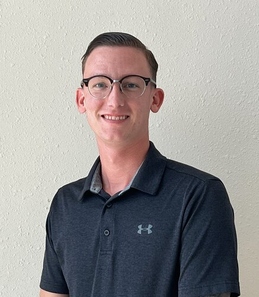

Dawson Ottinger

Summary
A Marine Corps Veteran, and IT Professional with over 8 years experience in Network Administration, Tier III Desktop Support, and Call Manager administration. After leaving service, I decided to pursue my Bachelor's in Computer Science, and I am set to graduate in May of 2025. As far as Web Development is concerned, my technical expertise involves data structures, HTML, CSS, PHP and JavaScript. I am a team player with exceptions people skills and problem solving tactics. I am seeking opportunities where I can utilize my existing knowledge for the bettment of an organization, as well as learn new skills to enhance my potential and flourish myself professionally.
Education
- Wilmington University
Bachelor of Science | Computer Science
- University of Maryland Global Campus
Bachelor of Science | Computer Networks and Cyber Security - Transferred to Wilmington University
- CompTIA
Security+ Certification SY-601 | Expires January 2025
- Middletown High School
Work Experience
- Robinson & Cole LLP - IT Support Analyst
- Provided Tier III desktop support to over 650 employees with duties that included account creation, system troubleshooting, quality control (QC), quality assurance (QA), network installation, and Microsoft O365 administration across various applications.
- Solely managed the maintenance and architecture in (4) locations to include Wilmington, DE - Philadelphia, PA - Washington D.C. - and Bethesda, MD.
- United States Marine Corps - Information Systems Supervisor
- Provided administrative level support to key personnel, with elements such as Active Directory, Office 365 migration, account creation/ migration, and Windows 10 troubleshooting.
- Trained over 50 personnel on Windows 10 administration, and proper systems administration in accordance with industry standards.
- United States Marine Corps - Information Systems Technician
- Submitted over 3,000 tickets on behalf of users for account creation, mobile device aquisition, and administrative level actions on Windows 10.
- Responded to trouble calls for key personnel to ensure proper functionality of their equipment.
Skills
- Soft Skills
- Leadership
- Problem Solving
- Communication
- Attention to detail
- Hard Skills
- Windows 10 administration
- SQL
- HTML
- CSS
- JavaScript
- PHP
- Python
Awards and Honors
- Navy and Marine Corps Achievement Medal - United States Marine Corps - July 2021
- Academic Dean's List - Wilmington University - Spring 2023
- Academic Dean's List - Wilmington University - Summer 2023
- Academic Dean's List - Wilmington University - Fall 2023